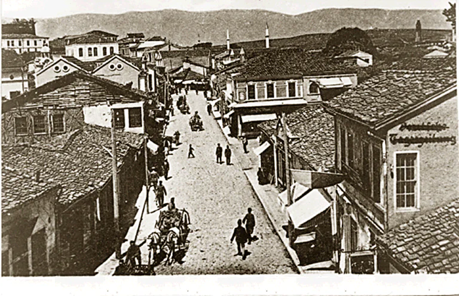
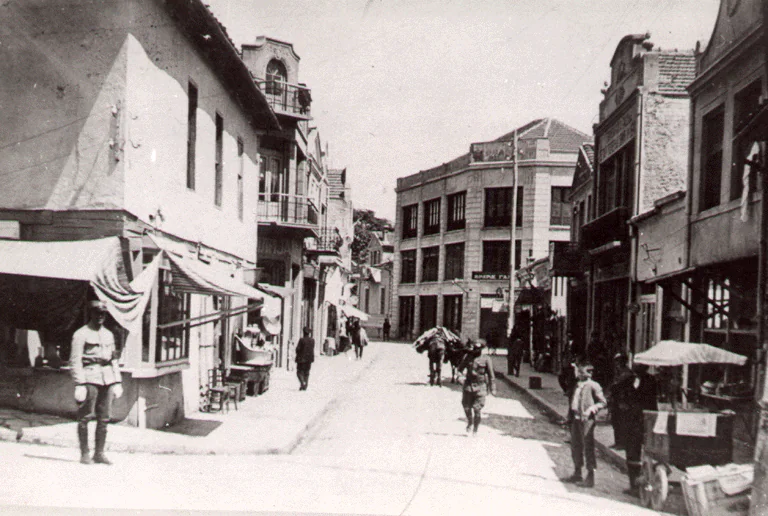
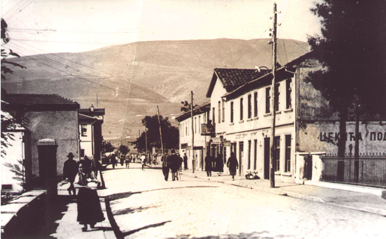
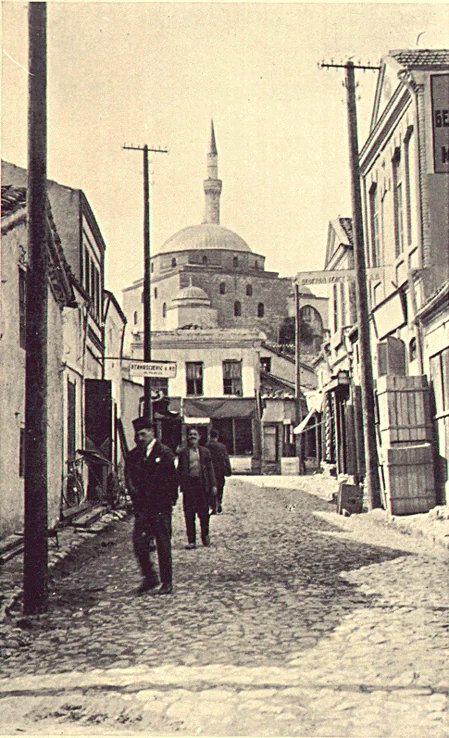
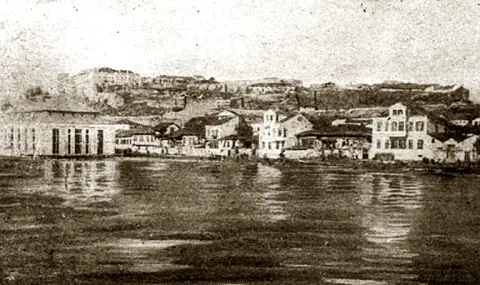

Зелёный рынок
- Производство
- УФУЖ и Документальное кино Прага
- Сценарий и режиссура
- Славко Яневски и EMAN CANERA
- Год
- 1959
- Продолжительность
- 00:18

Скопские христианские дома - 1870 год.

Часть старой скопской чаршии, 1902 год. Ряд лавок со ставнями перед Куршумли-ханом. На заднем плане видна башня хамама Гюльшен.

Главная улица в период формирования (сегодня улица «Македония», ведущая от нынешнего Музея города Скопье к Каменному мосту). Справа видна Католическая церковь в готическом стиле, а слева отдельные здания. Участок у Каменного моста замощён в 1911 году для проезда султана Мурада V, посетившего Скопье перед отъездом на Косово поле.

Снимок сделан со здания старого вокзала - нынешнего Музея города Скопье, построенного в 1873 году во времена Османской империи. На переднем плане подход к вокзалу с огороженными зелёными участками. Далее главная улица, ведущая к площади. В начале улицы слева гостиница «Россия».

Вид на главную улицу «Македония». Арка поставлена в честь какого-то важного гостя. Слева от неё гостиница «Россия». - начало XX века.

Главная улица с гостиницей «Москва» - 1920-е

Главная улица, нынешняя Македония, ведущая от нынешнего Музея города Скопье к площади. В конце улицы виден Офицерский дом, а справа от него Хозяйственно-торговая палата - 1930-е.

Главная улица, снятая в сторону нынешнего Музея города Скопье - около 1920 года.

Главная улица (нынешняя Македония), от площади к вокзалу - около 1920 года.

Главная улица Македония от нынешнего Музея города Скопье к площади. Слева гостиница «Бристоль», справа виден дворец Кранга. (1930-е)

Главная улица, ведущая от нынешнего Музея города Скопье к площади. Снято у нынешней гостиницы «Бристоль» и дворца Кранга. На заднем плане виден Офицерский дом - около 1935 года.

Главная улица, ведущая от нынешнего Музея города Скопье к площади. Угловое здание - дворец Кранга - 1930-е.

Дворец Кранга. - 1930-е.

Улица у набережной на правом берегу Вардара. - 1930-е

Улица в старой части города, ведущая к старой чаршии - конец XIX века.

Улица от Каменного моста к старой чаршии. - 1920-е

Улица в старой части города, в сторону квартала Чаир. На переднем плане стоянка фаэтонов и старый турецкий фонтан. На заднем плане дома старой народной архитектуры - 1920-е.

Каменный мост в сторону старой чаршии. Слева ряд торговых лавок, справа дом зубного врача д-ра Рубена и ряд лавок в сторону старой чаршии - около 1935 года.

Улица «Крушевска» в Пайко-махале, 1920-е.

Этой улицы сегодня нет. Она шла параллельно главной улице, от площади к старому вокзалу (нынешний Музей города Скопье) - 1920-е

Главная улица (нынешняя «Македония») - 1920-е.

Улица старой чаршии в Скопье. На заднем плане мечеть Мустафы-паши. - 1930-е

Улица в старой чаршии Скопье. На заднем плане видна мечеть Мустафы-паши. - 1930-е

Улица «Цветан Димов» в районе Чаир, 1940-е. На заднем плане видна мечеть Мехмед-паши.

Скопье, 1950-е. Вход в старую скопскую чаршию - место универмага «Мост». На переднем плане группа лавок, снесённых после землетрясения 1963 года. Слева видна часть Скопской крепости - Кале. На заднем плане мечеть Мустафы-паши.

Маленькая площадь в старой скопской чаршии, 1950-е.

Улица 11 Октября, снятая с площади в сторону нынешнего Собрания Р. Македонии. На заднем плане видно старое здание Управления внутренних дел. - 1950-е

Улица 11 Октября с Собранием Р. Македонии слева. Слева видна и средневековая башня. В глубине снимка видна часть здания старой почты. - конец 1950-х

Улица «Гоце Делчев», снятая с площади. На переднем плане слева видна часть гостиницы «Македония», рухнувшей при землетрясении 1963 года. - 1950-е

Главная улица в сторону площади. На переднем плане Католическая церковь. - 1950-е

Главная улица в направлении вокзала (нынешний Музей города Скопье). Слева видна Католическая церковь. - 1950-е

Главная улица «Македония» в сторону площади. - 1950-е

Скопье, 1950 год. Западная часть главной улицы. Слева гостиница «Москва».

На переднем плане перекрёсток улицы 11 Октября и бульвара Кочо Рацина. Справа от строящейся башни видна старая военная пекарня времён Первой мировой войны - 1950-е

Перекрёсток бульвара Кочо Рацина и улицы 11 Октября. - 1950-е

Улица у Городской больницы и Рабочего университета - 1950-е

Улица 11 Октября - конец 1970-х, в сторону площади «Македония».

Вид с улицы 11 Октября на площадь «Македония». Слева жилые дома, справа здание Электрохозяйства. - конец 1970-х

 Акведук4 открытки
Акведук4 открытки Кале30 открыток
Кале30 открыток Мосты60 открыток
Мосты60 открыток Набережная58 открыток
Набережная58 открыток Площадь46 открыток
Площадь46 открыток Здания66 открыток
Здания66 открыток Христианские храмы19 открыток
Христианские храмы19 открыток Мусульманские здания33 открытки
Мусульманские здания33 открытки Офицерский дом29 открыток
Офицерский дом29 открыток Театр28 открыток
Театр28 открыток Железнодорожный вокзал13 открыток
Железнодорожный вокзал13 открыток Школы36 открыток
Школы36 открыток Парки12 открыток
Парки12 открыток Рынки18 открыток
Рынки18 открыток Улицы38 открыток
Улицы38 открыток Панорама I60 открыток
Панорама I60 открыток Панорама II30 открыток
Панорама II30 открыток Коллажи55 открыток
Коллажи55 открыток
Наводнения9 открыток Землетрясение27 открыток
Землетрясение27 открыток Скопье 200026 открыток
Скопье 200026 открыток